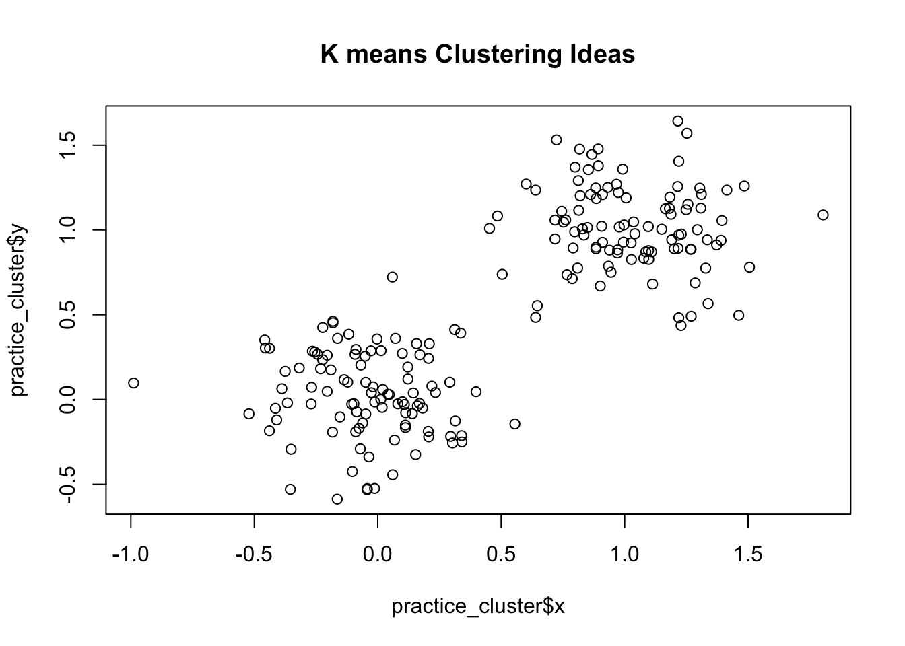
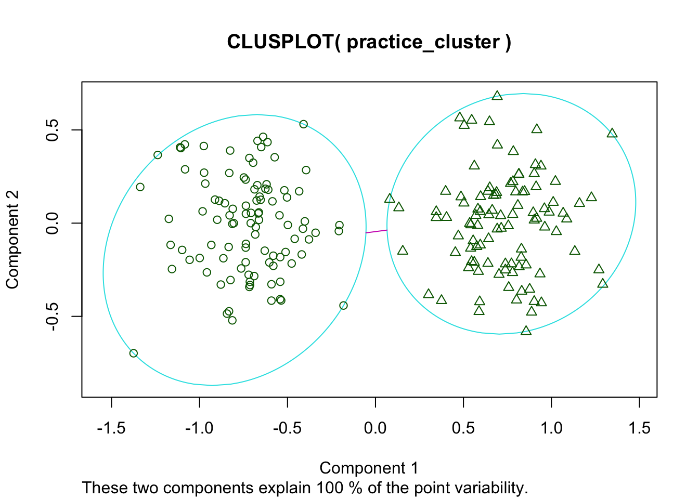
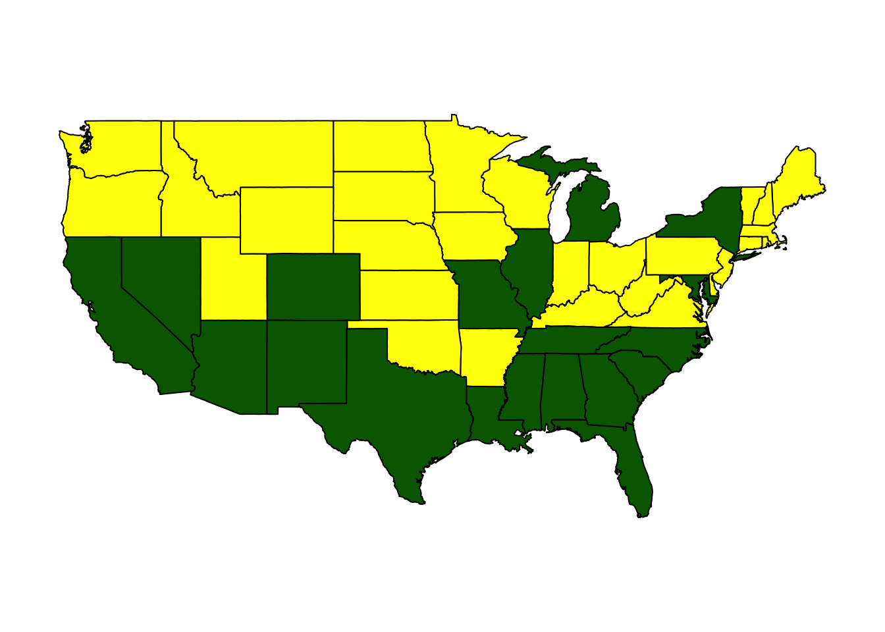
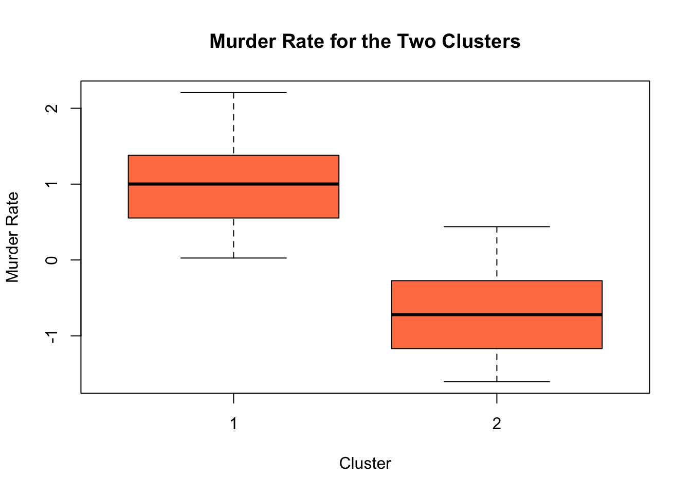
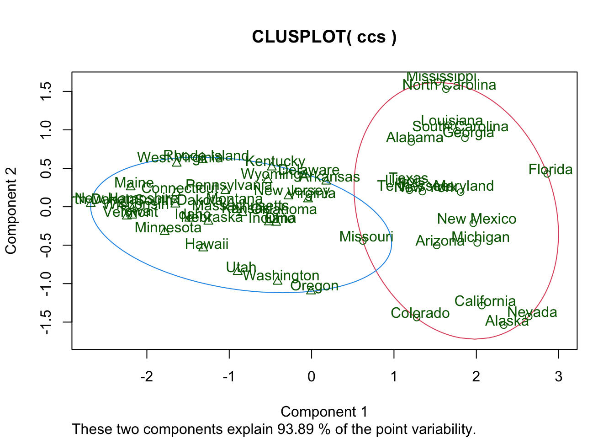
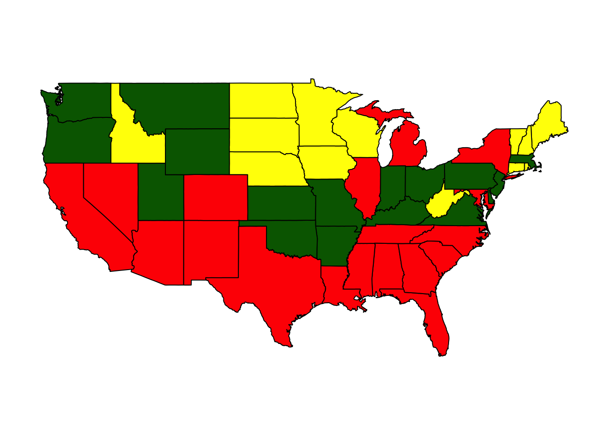
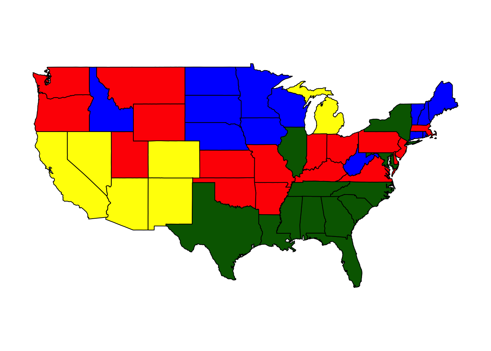
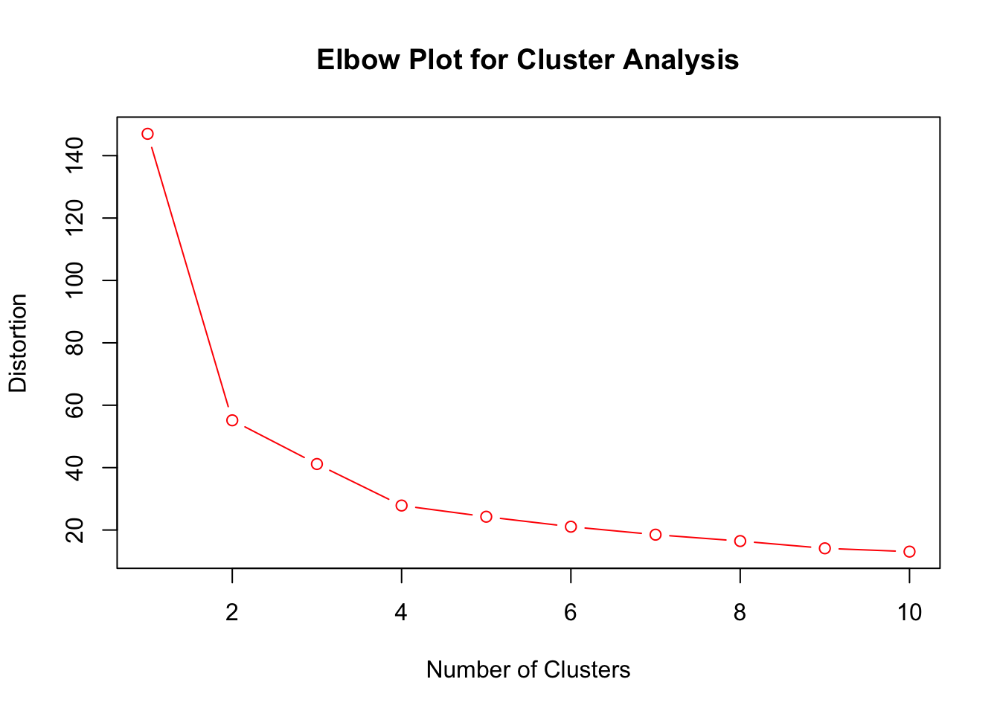
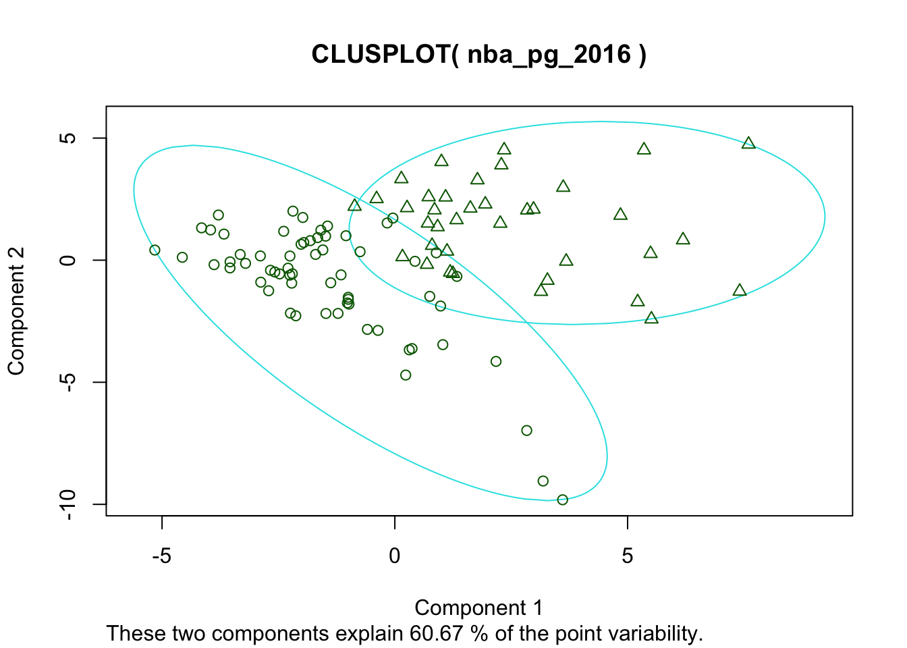
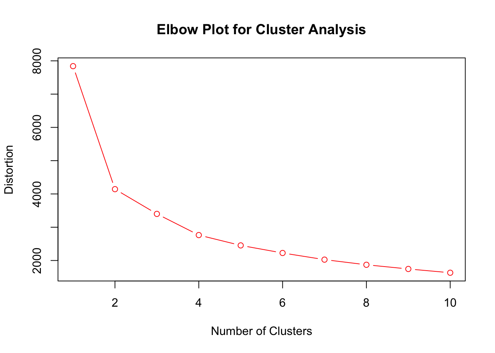

Chapter 5 Introduction to Clustering
5.1 What is Clustering?
Clustering properly belongs in a class on Machine Learning. However, it is so useful we will cover just the basics in this class. The idea behind clustering is to look for groups or clusters of related data points in our data set. For example, we might have a data set which gives the purchase history of customers. From this data we might want to extract classes of customers.
Here is what we need to get started (plus my package as usual):
library(maps)
library(cluster)these packages should have been installed at the same time you installed my package, if not then you will have to install them using the install.packages() function.
5.2 Introduction to Kmeans clustering
We will be using the kmeans clustering algorithm. The kmeans algorithm is pretty intuitive in nature. For example, lets suppose we have collected a data set with two variables and wish to create two clusters. We could plot the data points using those two variables: 
We can intuitively see two clusters in this data set. One is centered around (0,0) and the other is centered around (1,1). We can then draw a circles with a radius large enough to contain those points which are close to those centers. This is the main idea behind the k means clustering algorithm. However instead of us trying to eyeball where the center of the circles are we let the algorithm do the work for us. The k means algorithm has to be told how many clusters we are looking for, it then proceeds to minimize the sum of distances of points in a cluster to those centers.
cluster_obj<-kmeans(practice_cluster, centers=2, nstart=25)
clusplot(practice_cluster, cluster_obj$cluster)
This makes a two-dimensional plot of our data and which cluster each data point is assigned to. We can see that is this case the kmeans algorithm does a pretty good job of finding the two clusters in the data.
5.2.0.1 Crime Clusters by State
We are now going to look for clusters in a real data set. Lets load in a crime data set, which gives murder, assault and rape statistics for all 50 states in 1973. We are going to see if we can cluster these into groups of high and low crime states.
data("crime_cluster")Looking at the help page for this data we can see that we are given the number of arrests in each category per 100,000 residents.
head(crime_cluster)## Murder Assault Rape
## Alabama 13.2 236 21.2
## Alaska 10.0 263 44.5
## Arizona 8.1 294 31.0
## Arkansas 8.8 190 19.5
## California 9.0 276 40.6
## Colorado 7.9 204 38.7You can see that there are many more assault arrests per 100,000 residents than the other two categories. This can cause some issues with our clustering. Therefore, it is generally a good idea to standardize your variables. Recall, this means we just transform them so that each column has a mean of zero and a standard deviation of one. The scale command in R does this for us easily. For example,
ccs=data.frame(sapply(crime_cluster, scale)) ##this scales each column of the data and makes a new data frame ccs
rownames(ccs)=rownames(crime_cluster) ##this makes sure the state names are in our standardized data setNow when we look at the data:
head(ccs)## Murder Assault Rape
## Alabama 1.24256408 0.7828393 -0.003416473
## Alaska 0.50786248 1.1068225 2.484202941
## Arizona 0.07163341 1.4788032 1.042878388
## Arkansas 0.23234938 0.2308680 -0.184916602
## California 0.27826823 1.2628144 2.067820292
## Colorado 0.02571456 0.3988593 1.864967207we can see that Alabama is about one standard deviation above the national average in the murder and assault rate and about average in the rape category.
We can make a map of our crime clusters of states in R, using a function I wrote called StatePlot.
cl2 <- StatePlot(2, ccs) ##2 is the number of clusters to look for, ccs is the data
## Murder Assault Rape colors
## 1 1.004934 1.0138274 0.8469650 darkgreen
## 2 -0.669956 -0.6758849 -0.5646433 yellowNotice this prints out the cluster centers. It looks like it has found two main groups: high crime and low crime. The high crime cluster are all about one standard deviation above the mean in each of the three categories. The low crime cluster is centered around being 0.6 standard deviations below the national average in all categories.
We can explore the differences between the clusters further by making some box plots, splitting the states into their clusters. For example, the below box plot compares the normalized murder rates between the two clusters.
boxplot(ccs$Murder ~ cl2$cluster, main = "Murder Rate for the Two Clusters", ylab = "Murder Rate",
xlab = "Cluster", col = "coral")
We can also make a two-dimensional plot of our clusters using the clusplot command (in the cluster package). Since we have three variables this two-dimensional plot is a projection (shadow). R automatically chooses the best way to project the data onto two dimensions.
clusplot(ccs, cl2$cluster, labels = 3, color = TRUE)
Looking at this plot lets us see which states are barely in the high or low crime clusters (and which are NOT!). For example, it looks like Missouri just barely makes the list of high crime states according to our analysis.
5.3 How many clusters should we choose?
A difficult question to answer when we are conducting a cluster analysis on data is: How many clusters should I pick to get the best representation of my data? Sometimes, we know that we are looking for some number of groups. For example, cancer genes and not cancer genes, or terrorist versus non-terrorist, etc. However, in many other cases it is not obvious how many clusters should be in our data. For example, how many customer types are shopping on your website, how many types of learners are in the classroom, etc. Part of the beauty of cluster analysis is that we let the data guide us to how many clusters to pick.
To begin lets look at the crime data, and see what happens if we divide states into three groups. Here is a map if we cluster the states into three groups:
cl3 <- StatePlot(3, ccs)
## Murder Assault Rape colors
## 1 -0.2754591 -0.299928 -0.1233698 darkgreen
## 2 -1.0812577 -1.077921 -1.0070054 yellow
## 3 1.0431796 1.062614 0.8523875 redWe can see that the new cluster mostly split the low crime states into very low and sort of low. Here is a look at the clusters if we split the data into four clusters.
cl4 <- StatePlot(4, ccs)
## Murder Assault Rape colors
## 1 1.3420549 1.048826 0.2875176 darkgreen
## 2 0.5308219 1.086252 1.8207361 yellow
## 3 -0.2754591 -0.299928 -0.1233698 red
## 4 -1.0812577 -1.077921 -1.0070054 blueIn general, if we split the data into more clusters we can expect the data points to lie closer to the centers of the clusters. We can measure this by looking at the sum of all distances between the data points and the center of their clusters. The kmeans function reports this value to use:
cl2$tot.withinss## [1] 55.16373cl3$tot.withinss## [1] 41.15597cl4$tot.withinss## [1] 27.84746This will decrease as we increase the number of clusters. If we allowed for 50 clusters we would just get one cluster for each state in our data set (giving a withinss value of zero)– although this wouldn’t really tell us any useful information. Lets make a plot of the tot.withinss or distortion measurements against the total number of clusters.
ElbowClusterPlot(ccs) ##This is a special function written by me in the package HannayAppliedStats
One common criteria for choosing the number of clusters to use is to look for the “elbow” for this plot. The elbow gives the smallest number of clusters which yields a big decrease in the total distance from the centers of the clusters. For the crime clusters the elbow occurs for \(2\) clusters, as adding in a third cluster doesn’t really reduce the total error (distortion) by much.
Exercise 5.1 Conduct a cluster analysis for the bad drivers data set. Load this data by typing data(bad_drivers_cluster).
+ Make a State plot of the bad drivers data set for two clusters. Does Texas belong to the better or worse driver cluster?
+ Cluster the States into two clusters and make a boxplot comparing the perc_speeding values between the clusters
+ Make an Elbow plot to determine the optimal number of clusters in the data. Does this plot have an obvious elbow?
5.4 Clustering NBA Players
As another interesting application of clustering lets consider clustering the top 100 NBA players by per game statistics. The below code forms two clusters among the top 100 players, using a built in data set:
data("nba_pg_2016") ##load the nba data
nba_clusters = kmeans(nba_pg_2016, centers = 2, nstart = 25)
nba_clusters$centers## FG FGA FG. X3P X3PA X3P. X2P X2PA
## 1 5.509524 12.03968 0.4607302 1.479365 4.025397 0.3440952 4.041270 8.022222
## 2 8.227027 17.53243 0.4696757 1.875676 5.010811 0.3614865 6.348649 12.535135
## X2P. eFG. FT FTA FT. ORB DRB TRB
## 1 0.5024603 0.5219841 2.473016 3.133333 0.7919365 1.163492 4.247619 5.403175
## 2 0.5080270 0.5230541 5.151351 6.213514 0.8322432 1.145946 4.794595 5.937838
## AST STL BLK TOV PF PPG
## 1 2.961905 0.9492063 0.5396825 1.742857 2.239683 14.96508
## 2 4.854054 1.1810811 0.6756757 2.724324 2.283784 23.47027row.names(subset(nba_pg_2016, nba_clusters$cluster == 1))## [1] "Kevin Love" "Zach LaVine"
## [3] "Rudy Gay" "Danilo Gallinari"
## [5] "Paul Millsap" "Chris Paul"
## [7] "Kristaps Porzingis" "Dennis Schroder"
## [9] "Lou Williams" "LaMarcus Aldridge"
## [11] "Evan Fournier" "George Hill"
## [13] "Nikola Jokic" "Avery Bradley"
## [15] "Eric Gordon" "Tobias Harris"
## [17] "Victor Oladipo" "Dion Waiters"
## [19] "Wilson Chandler" "D'Angelo Russell"
## [21] "Jrue Holiday" "Jeff Teague"
## [23] "Nicolas Batum" "J.J. Redick"
## [25] "Gary Harris" "Serge Ibaka"
## [27] "Jordan Clarkson" "Khris Middleton"
## [29] "Nikola Vucevic" "Tim Hardaway"
## [31] "Reggie Jackson" "Jeremy Lin"
## [33] "Myles Turner" "T.J. Warren"
## [35] "Enes Kanter" "Dirk Nowitzki"
## [37] "Jordan Crawford" "Zach Randolph"
## [39] "Rudy Gobert" "Al Horford"
## [41] "Marcus Morris" "Markieff Morris"
## [43] "Jae Crowder" "Kentavious Caldwell-Pope"
## [45] "Will Barton" "Bojan Bogdanovic"
## [47] "Tyler Johnson" "Ryan Anderson"
## [49] "Andre Drummond" "Dwight Howard"
## [51] "Wesley Matthews" "Otto Porter"
## [53] "Darren Collison" "Julius Randle"
## [55] "Nick Young" "Ersan Ilyasova"
## [57] "Sean Kilpatrick" "Robert Covington"
## [59] "Seth Curry" "James Johnson"
## [61] "Elfrid Payton" "Dario Saric"
## [63] "Aaron Gordon"row.names(subset(nba_pg_2016, nba_clusters$cluster == 2))## [1] "Russell Westbrook" "James Harden" "Isaiah Thomas"
## [4] "Anthony Davis" "DeMar DeRozan" "DeMarcus Cousins"
## [7] "Damian Lillard" "LeBron James" "Kawhi Leonard"
## [10] "Stephen Curry" "Kyrie Irving" "Kevin Durant"
## [13] "Karl-Anthony Towns" "Jimmy Butler" "Paul George"
## [16] "Andrew Wiggins" "Kemba Walker" "Bradley Beal"
## [19] "John Wall" "C.J. McCollum" "Giannis Antetokounmpo"
## [22] "Carmelo Anthony" "Kyle Lowry" "Klay Thompson"
## [25] "Devin Booker" "Gordon Hayward" "Blake Griffin"
## [28] "Eric Bledsoe" "Mike Conley" "Brook Lopez"
## [31] "Goran Dragic" "Joel Embiid" "Jabari Parker"
## [34] "Marc Gasol" "Harrison Barnes" "Dwyane Wade"
## [37] "Derrick Rose"Knowing something about the NBA it looks like the clustering algorithm has found the a cluster of the “star” players. We could also view this as high usage players versus low usage players. The star cluster gets more shot attempts, free throws, etc then the other cluster. Here is a two dimensional plot of the two cluster solution.
clusplot(nba_pg_2016, nba_clusters$cluster)
Lets see what happens if we break into three clusters:
nba_clusters = kmeans(nba_pg_2016, centers = 3, nstart = 25)
nba_clusters$centers## FG FGA FG. X3P X3PA X3P. X2P X2PA
## 1 8.958824 18.75882 0.4795882 1.682353 4.705882 0.3475882 7.282353 14.064706
## 2 7.310714 15.92857 0.4593571 1.914286 5.003571 0.3724286 5.396429 10.939286
## 3 5.354545 11.67818 0.4616182 1.461818 3.980000 0.3402909 3.901818 7.705455
## X2P. eFG. FT FTA FT. ORB DRB TRB
## 1 0.5201176 0.5240000 6.347059 7.705882 0.8255294 1.411765 5.876471 7.288235
## 2 0.4960000 0.5187500 3.950000 4.728571 0.8369286 1.050000 4.203571 5.246429
## 3 0.5040364 0.5237273 2.325455 2.980000 0.7857636 1.132727 4.134545 5.260000
## AST STL BLK TOV PF PPG
## 1 5.782353 1.3000000 0.7823529 3.070588 2.282353 25.95882
## 2 3.985714 1.0857143 0.6285714 2.360714 2.339286 20.47143
## 3 2.841818 0.9272727 0.5109091 1.678182 2.205455 14.48545row.names(subset(nba_pg_2016, nba_clusters$cluster == 1))## [1] "Russell Westbrook" "James Harden" "Isaiah Thomas"
## [4] "Anthony Davis" "DeMar DeRozan" "DeMarcus Cousins"
## [7] "Damian Lillard" "LeBron James" "Kawhi Leonard"
## [10] "Kyrie Irving" "Kevin Durant" "Karl-Anthony Towns"
## [13] "Jimmy Butler" "Andrew Wiggins" "John Wall"
## [16] "Giannis Antetokounmpo" "Blake Griffin"row.names(subset(nba_pg_2016, nba_clusters$cluster == 2))## [1] "Stephen Curry" "Paul George" "Kemba Walker"
## [4] "Bradley Beal" "C.J. McCollum" "Carmelo Anthony"
## [7] "Kyle Lowry" "Klay Thompson" "Devin Booker"
## [10] "Gordon Hayward" "Eric Bledsoe" "Mike Conley"
## [13] "Brook Lopez" "Goran Dragic" "Joel Embiid"
## [16] "Jabari Parker" "Marc Gasol" "Harrison Barnes"
## [19] "Kevin Love" "Zach LaVine" "Rudy Gay"
## [22] "Dwyane Wade" "Paul Millsap" "Chris Paul"
## [25] "Kristaps Porzingis" "Derrick Rose" "Dennis Schroder"
## [28] "LaMarcus Aldridge"row.names(subset(nba_pg_2016, nba_clusters$cluster == 3))## [1] "Danilo Gallinari" "Lou Williams"
## [3] "Evan Fournier" "George Hill"
## [5] "Nikola Jokic" "Avery Bradley"
## [7] "Eric Gordon" "Tobias Harris"
## [9] "Victor Oladipo" "Dion Waiters"
## [11] "Wilson Chandler" "D'Angelo Russell"
## [13] "Jrue Holiday" "Jeff Teague"
## [15] "Nicolas Batum" "J.J. Redick"
## [17] "Gary Harris" "Serge Ibaka"
## [19] "Jordan Clarkson" "Khris Middleton"
## [21] "Nikola Vucevic" "Tim Hardaway"
## [23] "Reggie Jackson" "Jeremy Lin"
## [25] "Myles Turner" "T.J. Warren"
## [27] "Enes Kanter" "Dirk Nowitzki"
## [29] "Jordan Crawford" "Zach Randolph"
## [31] "Rudy Gobert" "Al Horford"
## [33] "Marcus Morris" "Markieff Morris"
## [35] "Jae Crowder" "Kentavious Caldwell-Pope"
## [37] "Will Barton" "Bojan Bogdanovic"
## [39] "Tyler Johnson" "Ryan Anderson"
## [41] "Andre Drummond" "Dwight Howard"
## [43] "Wesley Matthews" "Otto Porter"
## [45] "Darren Collison" "Julius Randle"
## [47] "Nick Young" "Ersan Ilyasova"
## [49] "Sean Kilpatrick" "Robert Covington"
## [51] "Seth Curry" "James Johnson"
## [53] "Elfrid Payton" "Dario Saric"
## [55] "Aaron Gordon"Looks like the “high usage” or stars split into two clusters (mid level stars and superstars) when we allow for three clusters. Conducting an elbow plot analysis shows that two or three clusters is probably the best choice in this case.
ElbowClusterPlot(nba_pg_2016, scale = FALSE)
5.5 Requirements for Performing Cluster Analysis
In order to perform kmeans clustering analysis on a data set we need to have a a key property:
- All the data used in the clustering must be either numerical in nature or at least an ordinal categorical variable (stored as a number, with a defined order). You cannot use clustering analysis on data which includes nominal categorical variables as the distance between categories like (male/female) isn’t defined. I have written a function called
grabNumericin my package which can be used to remove any non numerical columns from a data frame. By default this will also drop the rows with missing values in the clustering variables.
See the example below for how to use the grabNumeric function.
data("Young_People_Survey")
dim(Young_People_Survey)## [1] 1010 150yp = grabNumeric(Young_People_Survey)
dim(yp)## [1] 686 139- The clusters found by the algorithm can be sensitive to the normalization of the data. You should choose whether you want to standardize your variables (using
scale) carefully. Having variables which were measured on widely different scales can lead to erroneous clusters being found.
5.6 Homework
5.6.1 Concept Questions
Are the following statements True or False? Why?
When performing a kmeans cluster analysis, the algorithm will automatically choose the optimal number of clusters for you.
Cluster analysis can be performed using nominal categorical variables.
When performing cluster analysis you should always standardize the variables.
Kmeans clustering seeks to minimise the distance from each point to the center of a fixed number of clusters.
5.6.2 Practice Problems
- Give an example of a data set where clustering analysis might be interesting. This can be an imaginary data set, just explain the context.
5.6.3 Advanced Problems
Load the bad_drivers data set and perform a cluster analysis.
- Should we standardize the variables in this data set?
- How many clusters should we choose for this data set?
- Which states have the worst drivers? Give just a couple of examples of states in the cluster with the worst drivers.
Load the iris data set using
data(iris). Look at the help page to see what this data set contains?iris.- How many iris species are in the data set?
- Can the Species column be used in a clustering analysis? Why or Why not?
- If the Species column can not be used in your estimation remove this column by running the command:
iris$Species<-NULL. How many clusters should we choose for this data set? - Run a clustering analysis and give the centroids of your clusters
- Make a
clusplotof your clusters. How well are they separated? You will need the cluster package for this installed and loaded. - Make a box plot of the Sepal.Width for the different clusters found in your analysis.